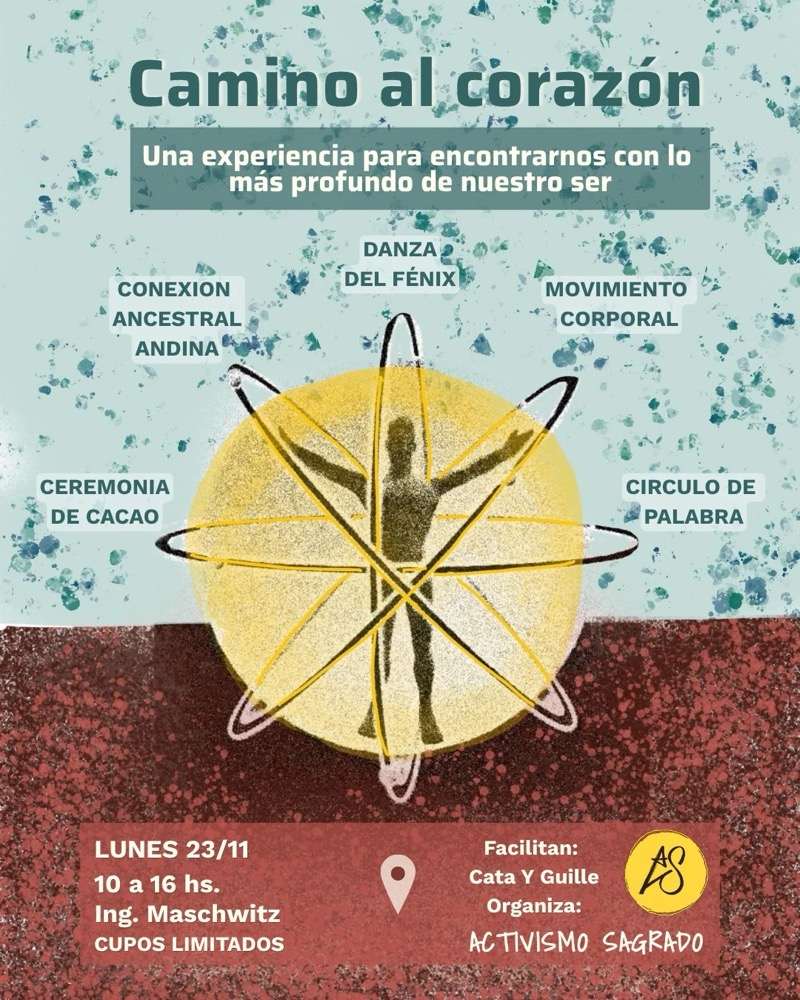
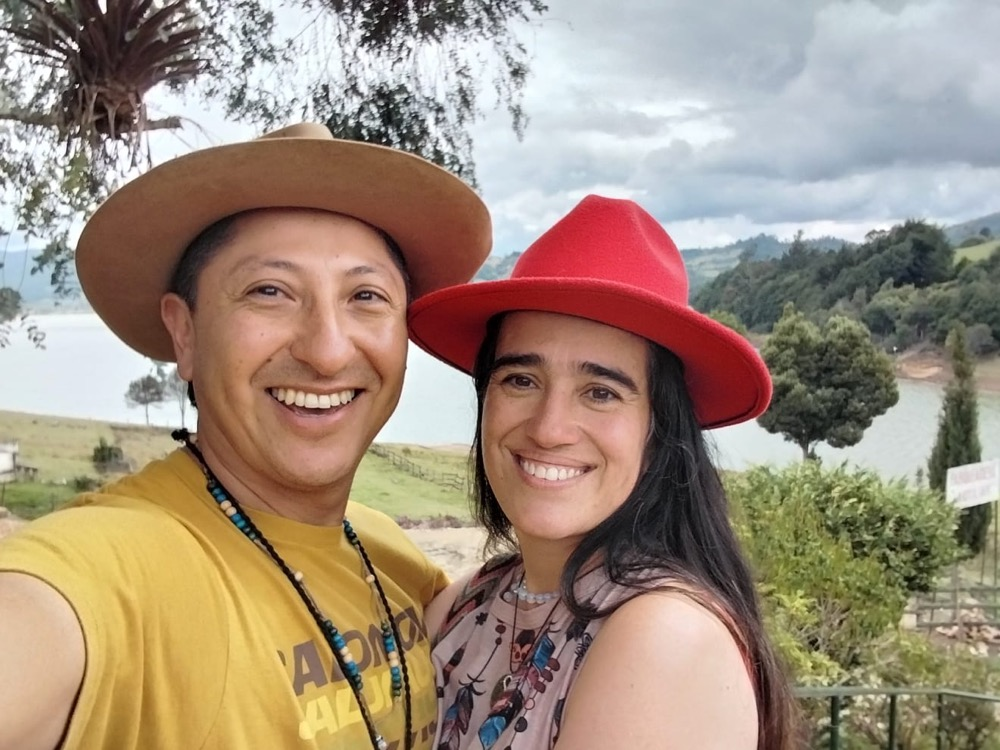
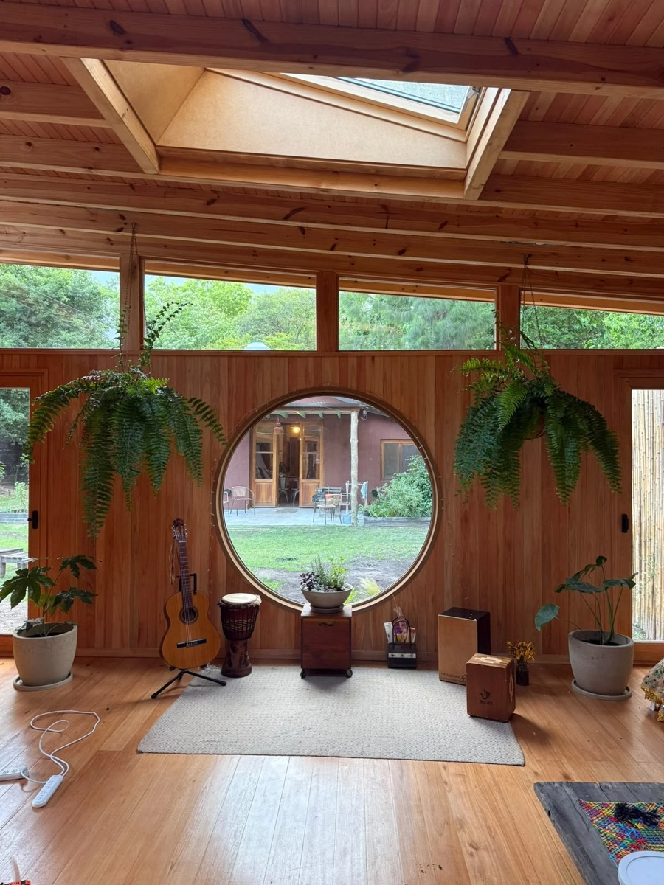
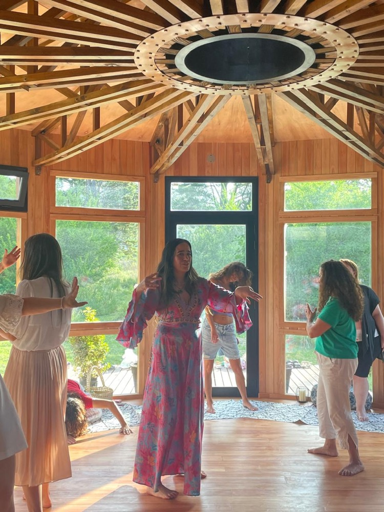
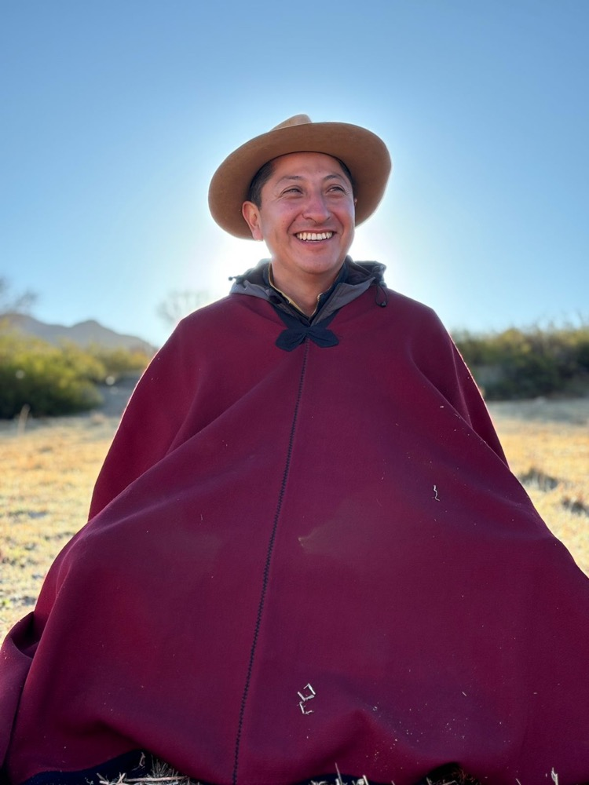

Un viaje para el alma.
Una experiencia vivencial para volver al corazón y abrir nuevos espacios de conciencia. Durante su visita a Buenos Aires, Catalina Heincke (Colombia) y Guillermo Colque Puppi (Valles Calchaquíes, Salta) comparten una jornada de apertura del corazón, movimiento y conexión ancestral andina.

Proponemos tres valores para que nadie quede afuera. Después de reservar, te llega el link del grupo de WhatsApp del encuentro con la dirección exacta.
El pago se procesa de forma segura en Mercado Pago. ¿Dudas? Escribinos.

Desde recorridos y lugares de origen distintos —Colombia y los Valles Calchaquíes de Salta—, Cata y Guille comparten sus prácticas y saberes en una jornada para sentir, escuchar y reconectar.
Camino al corazón es una experiencia vivencial que enlaza movimiento, meditación, cantos ancestrales y conexión con la sabiduría de la cosmovisión andina. En su visita a Buenos Aires, Cata y Guille integran sus caminos en una experiencia conjunta para abrir el corazón, escuchar y reconectar.
Abrimos la jornada con la medicina del cacao, para entrar en el encuentro desde el corazón.
Un momento para soltar lo que traemos, limpiar y armonizar nuestra energía.
Catalina nos invita a recorrer el cuerpo a través del movimiento, la danza y la expresión, abriendo espacios para sentir, liberar y reconectar con nuestra propia energía.
Guillermo comparte cantos, sonidos y prácticas vinculadas con la memoria ancestral andina, la Madre Tierra y la cosmovisión de los Valles Calchaquíes.
Espacios para escuchar hacia adentro, compartir lo que aparece y darle lugar a nuevas preguntas.
Prácticas vinculadas con la sabiduría de la cosmovisión andina, desde el recorrido de Guillermo y su vínculo con el territorio.

La invitación es participar, sentir y darle lugar a nuevas preguntas.

Cata nos invita a recorrer el cuerpo a través del movimiento, la danza y la expresión, abriendo espacios para sentir, liberar y reconectar con nuestra propia energía.

Guía de conexión y conciencia ancestral andina. Desde Finca Potrero de Payogasta, en los Valles Calchaquíes de Salta, desarrolla una tarea de conexión con la sabiduría ancestral andina, la naturaleza y la memoria espiritual de los territorios sagrados.
A través de encuentros, sesiones, retiros y viajes de conexión, acompaña procesos de apertura del corazón, expansión de la conciencia y reconexión con la propia esencia. Su trabajo integra cantos ancestrales, sonidos, frecuencias, activación de Discos Solares y experiencias de conexión con la Madre Tierra y la cosmovisión andina.
Hoy comparte este camino junto a Catalina Heincke, integrando sus dones y talentos en experiencias de unión sagrada, conciencia y conexión con el corazón.